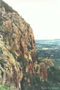
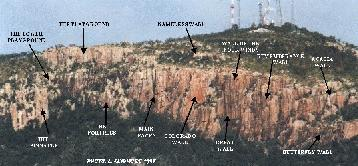

By Lee Skidmore, November 1999
Last updated 24 March, 2000

| Mount Stuart Climbing Guide |
By Lee Skidmore, November 1999 Last updated 24 March, 2000 |
|
|
|
|
ACCESS Mt Stuart is North Queensland's premier crag and is located located 22km from Townsville's city heart. It's the mountain with the TV towers on the top. Any map of Townsville can show you how to get there. Its peak is 584m above sea level. On Townsville's 1:100000 map #8259 it is closest to the co-ordinates 77,61. When you are close to the top, instead of turning sharply left and going all the way to the top, turn right and park off the side of the road. Don't obstruct the gate of the TV station. From here, follow the track past the fence for about five minutes until you reach the top of the cliff called the Playground. |
 |
|
Above: View of Stuart from the Pinnacle |
THE CLIMBING
Rock type: Fantastic, medium-grained granite. Forms lots of fingery flakes, and there are plenty of nice cracks around the place.
|
Climbs: Many of the hardest routes are bolted face routes. There are plenty of face routes, but also nice cracks up to around grade 25+. The climbs graded 0 to 26 are spread over an extensive area. There are heaps of little (and big) walls, and most of them have climbs on them and are named (check out the topo map). The Playground is the most popular and most easily accessible area, but only represents a tiny portion of what's available. There are over 150 climbs on the Playground up to about 23m in height, and over 100 in other areas. There are multi-pitch climbs in other areas up to 100m+. New routes go up regularly on this massive crag. |
 |
|
Above: Click the picture for a clickable topo photo |
Take a full rack and bolt plates. Anchors are usually set up off boulders, trees and natural pro.
CAMPING
Camping isn't permitted
on Mt Stuart itself, and is pretty undesirable anyway due to the rocky ground pretty much everywhere. A better bet would be to stay in one of the caravan parks down the hill.
The nearest is Sun City at 119 Bowen Road, Rosslea.
WHEN TO GO
Well winter is awesome, and summer is hot, but due to the perfect positioning of the crag, it is still very climbable. The trick is to never turn up before lunch time, that way when you arrive at midday, the sun
disappears over the top of the Playground, throwing the majority of the crag into shade. Brilliant! Besides, we climbers all know of the perils of waking before lunch.
GUIDEBOOKS
1) "A Climber's Guide To Townsville and Magnetic Island - 1999" by Doug Hockly. It's a good guide and in addition to Mt Stuart, it also covers Castle Hill, West End Quarry, Lazy Afternoon Wall, University Wall, Kissing Point and of course, Magnetic Island. To get a copy of Doug's guide, email him.
2) "Lee's Mount Stuart Select Guide". Before Doug's guide came out, there was no recent guide available. Because of this, I created a Select Guide which gives a rundown of the better routes in each of the areas. This will continue to be a popular alternative for cheapskates.
[Go to Mount Stuart Climbing Gallery]
[Go to Lee's Mount Stuart Select Guide]

{kind=link}